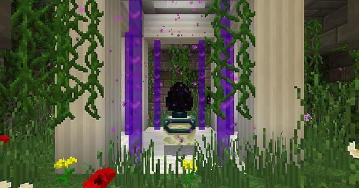
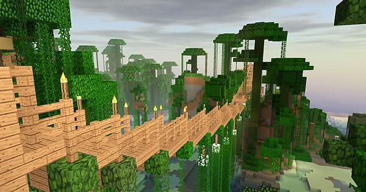
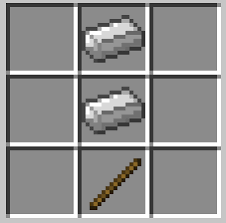
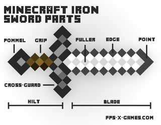
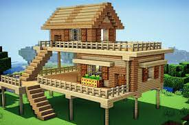
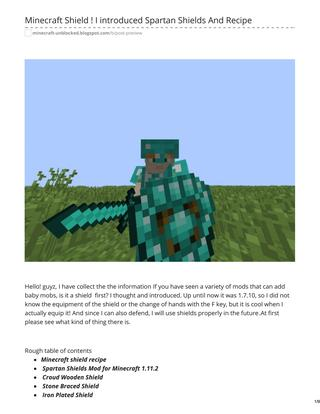

To hatch a Dragon egg, players have to find one. To access the egg, the player must defeat the Ender Dragon in Minecraft. ... The player should build-up to the egg level on the side of the portal and than build over to the egg. NOTE: This should be on the cardinal side of the block.
Jungles are rare biomes in Minecraft. They commonly spawn next to the Mega Taiga biome or near forests and extreme hill biomes. Players can even find jungles next to deserts and savannas. Jungles can be spotted by looking for larger-than-normal trees with vines hanging from them.
In the crafting menu, you should see a crafting area that is made up of a 3x3 crafting grid. To make an iron sword, place 2 iron ingots and 1 stick in the 3x3 crafting grid.
 How to make a house. To make any building in Minecraft, you'll just need to place blocks to make walls. Place blocks on top of each other to build up some walls, and make a roof by placing blocks side-by-side on top. Most blocks will work for a preliminary house, whether it's Dirt, Wood, or Cobblestone.
The Diamond Shield is added by the Asgard Shield mod. ... The shield has a durability of 780 and will absorb 25% of incoming damage even if it is not actively guarding.
 How to make a tree house Minecraft!